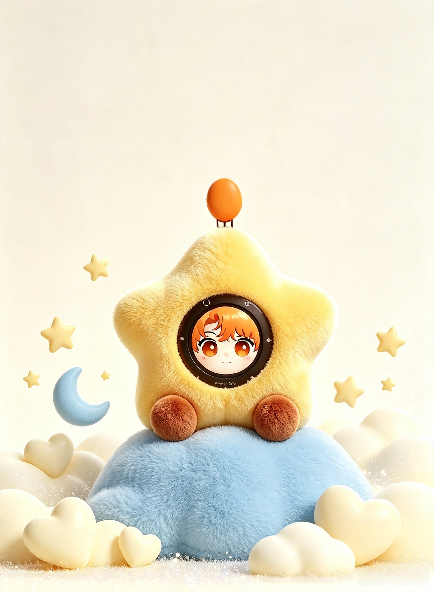
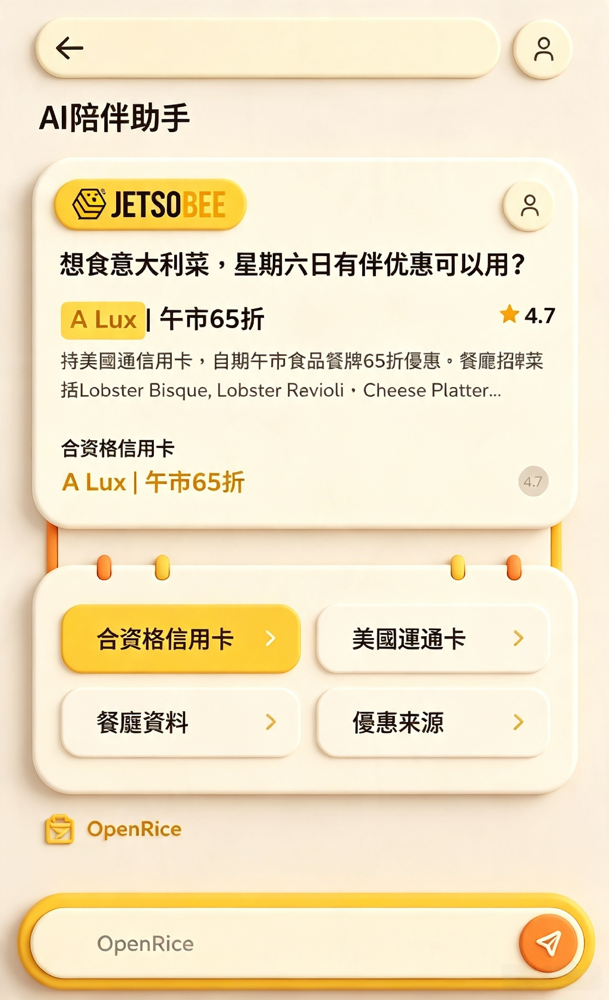
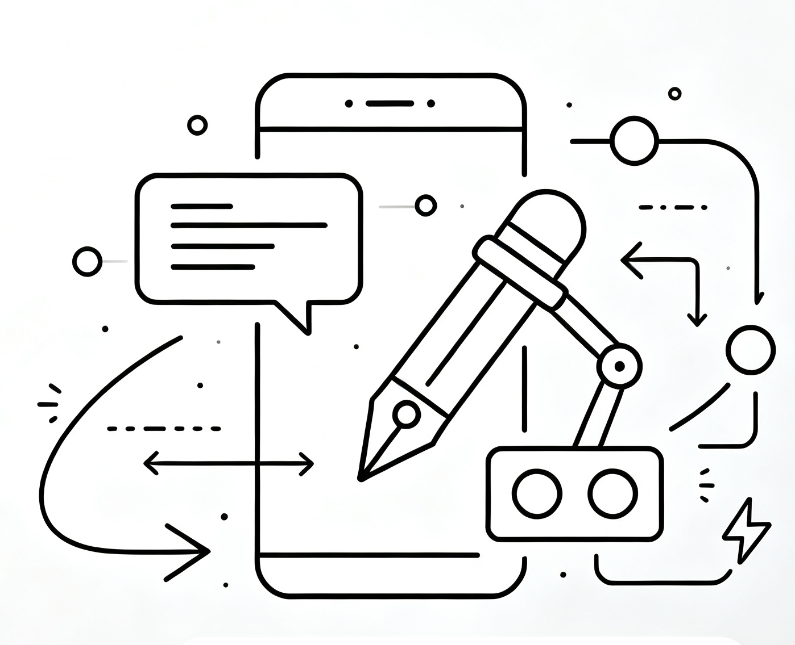
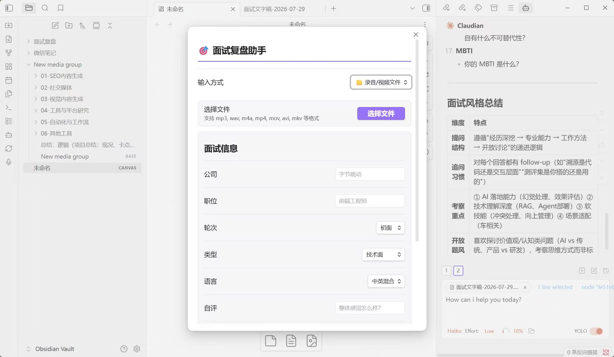

在 TCL 雷鸟负责 AmbyUni 智能陪伴机器人的记忆与对话体验，从模型选型、Prompt 到功能落地。
FAN SHUYUAN / AI PRODUCT MANAGER
FAN
SHUYUAN
AI 产品经理
把复杂的技术，做成自然的体验。
关注用户，也关注真实的结果。
SHANGHAI · HONG KONGOPEN TO NEW IDEAS
查看作品 ↓
SCROLL TO EXPLORE
EXPLORE MY WORLD
先认识我，再看看我如何把 AI 做成真实的体验。
01 / ABOUT ME
我不只问「模型能做什么」，
更在意「用户为什么需要它」。
☻
你好呀!从用户洞察、模型能力评估，到产品方案与增长验证，我享受把复杂的 AI 技术，转译为具体、自然且有价值的产品体验。
RAGAgentDSPyn8nSQLVibe codingPromptPython
WHAT I BRING
用用户研究定位问题，用 A/B 测试与 POC 验证方案，再把结果落到可衡量的产品指标。
香港大学人工智能与伦理社会硕士在读。技术能力之外，也持续关注 AI 如何真正进入人的生活。
HOW I WORK
先听用户
从 200 位测试用户的对话里找问题，而不是先找一个技术可以套用的场景。
也懂模型
能参与 RAG、Agent、DSPy 与 Prompt 的具体设计，让产品判断建立在能力边界之上。
把结果讲清
关注体验，也用准确率、响应速度、使用率和转化来证明产品是否值得继续投入。
02 / SELECTED WORK
一些认真
做过的事 ↘
从陪伴机器人到银行 Agent，
每个项目都从一个真实的问题开始。

AMBY UNI · AI COMPANION
LIVE RECOMMENDATION
DATA → AI → PUSH
INTERVIEW REPLAY ASSISTANTObsidian 插件
把每一次面试，
变成下一次的底气。
独立完成从产品、开发到获客验证的面试复盘助手：录音 / 视频 → 转文字 → AI 复盘报告。
5w+社媒播放50+上线两天用户完整商业化闭环
进入项目详情 →03 / MY JOURNEY
从传播出发，
在 AI 落地。
then now
EXPERIENCE
2025.10 — 2026.03
TCL 雷鸟
AI 产品经理 · AI 智能陪伴机器人
INTERNSHIP2023.06 — 2025.06
英皇 · 香港新传媒
AI 产品经理 · Agent / AIGC 产品
FULL-TIMEEDUCATION
2025.09 — 2026.11
香港大学
人工智能与伦理社会 · 硕士在读
MASTER'S · IN PROGRESS2019.09 — 2023.06
香港浸会大学
社会与媒体传播专业 · 本科
BACHELOR'SA GOOD CONVERSATION STARTS HERE
有个想法？
聊聊吧。
留下邮箱，我会在合适的时候回复。